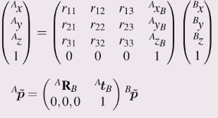

Pose has
- a translational component, and
- a rotational component
It can be represented by
- vector + Euler angles
- vector + roll-pitch-yaw angles (fixed angles)
- vector + Quaternion
- Homogeneous transformation
homogeneous transform matrix
Using the rotation matrix avoids singularity’s, unlike the Euler and fixed angle approaches.